전기기사 (2021-08-14 기출문제)
1과목: 전기자기학
1. 자기 인덕턴스가 각각 L1, L2인 두 코일의 상호 인덕턴스가 M일 때 결합 계수는?
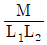
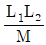
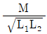
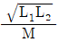
(정답률: 80%)

2. 정상 전류계에서 J는 전류밀도, σ는 도전율, ρ는 고유저항, E는 전계의 세기일 때, 옴의 법칙의 미분형은?
- J=σE
- J=E/σ
- J=ρE
- J=ρσE
(정답률: 66%)
3. 길이가 10cm이고 단면의 반지름이 1cm인 원통형 자성체가 길이 방향으로 균일하게 자화되어 있을 때 자화의 세기가 0.5Wb/m2이라면 이 자성체의 자기모멘트(Wbㆍm)는?
- 1.57×10-5
- 1.57×10-4
- 1.57×10-3
- 1.57×10-2
(정답률: 44%)
4. 그림과 같이 공기 중 2개의 동심 구도체에서 내구(A)에만 전하 Q를 주고 외구(B)를 접지하였을 때 내구(A)의 전위는?
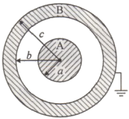
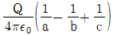
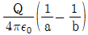
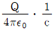
- 0
(정답률: 65%)
5. 평행판 커패시터에 어떤 유전체를 넣었을 때 전속밀도가 4.8×10-7C/m2이고 단위 체적당 정전에너지가 5.3×10-3J/m3이었다. 이 유전체의 유전율은 약 몇 F/m인가?
- 1.15×10-11
- 2.17×10-11
- 3.19×10-11
- 4.21×10-11
(정답률: 68%)
6. 히스테리시스 곡선에서 히스테리시스 손실에 해당하는 것은?
- 보자력의 크기
- 잔류자기의 크기
- 보자력과 잔류자기의 곱
- 히스테리시스 곡선의 면적
(정답률: 79%)
7. 그림과 같이 극판의 면적이 S(m2)인 평행판 커패시터에 유전율이 각각 ε1=4, ε2=2인 유전체를 채우고 a, b 양단에 V(V)의 전압을 인가했을 때 ε1, ε2인 유전체 내부의 전계의 세기 E1과 E2의 관계식은? (단, σ(C/m2)는 면전하밀도이다.)
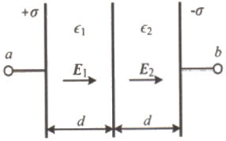
- E1=2E2
- E1=4E2
- 2E1=E2
- E1=E2
(정답률: 64%)
8. 간격이 d(m)이고 면적이 S(m2)인 평행판 커패시터의 전극 사이에 유전율이 ε인 유전체를 넣고 전극 간에 V(V)의 전압을 가했을 때, 이 커패시터의 전극판을 떼어내는데 필요한 힘의 크기(N)는?
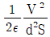
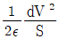
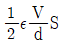
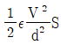
(정답률: 59%)
9. 다음 중 기자력(magnetomotive force)에 대한 설명으로 틀린 것은?
- SI 단위는 암페어(A)이다.
- 전기회로의 기전력에 대응한다.
- 자기회로의 자기저항과 자속의 곱과 동일하다.
- 코일에 전류를 흘렸을 때 전류밀도와 코일의 권수의 곱의 크기와 같다.
(정답률: 52%)
10. 유전율 ε, 투자율 μ인 매질 내에서 전자파의 전파속도는?
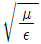
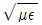
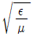
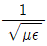
(정답률: 70%)
11. 평균 반지름(r)이 20cm, 단면적(S)이 6cm2인 환상 철심에서 권선수(N)가 500회인 코일에 흐르는 전류(I)가 4A일 때 철심 내부에서의 자계의 세기(H)는 약 몇 AT/m인가?
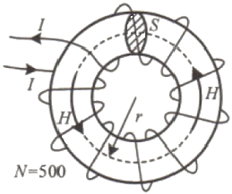
- 1590
- 1700
- 1870
- 2120
(정답률: 64%)
12. 패러데이관(Faraday tube)의 성질에 대한 설명으로 틀린 것은?
- 패러데이관 중에 있는 전속수는 그 관속에 진전하가 없으면 일정하며 연속적이다.
- 패러데이관의 양단에는 양 또는 음의 단위 진전하가 존재하고 있다.
- 패러데이관 한 개의 단위 전위차 당 보유에너지는 (1/2)J이다.
- 패러데이관의 밀도는 전속밀도와 같지 않다.
(정답률: 71%)
13. 공기 중 무한 평면도체의 표면으로부터 2m 떨어진 곳에 4C의 점전하가 있다. 이 점전하가 받는 힘은 몇 N인가?
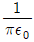
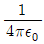
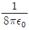
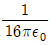
(정답률: 50%)
14. 반지름이 r(m)인 반원형 전류 I(A)에 의한 반원의 중심(O)에서 자계의 세기(AT/m)는?
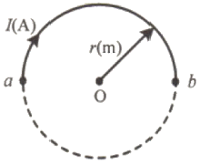
- 2I/r
- I/r
- I/2r
- I/4r
(정답률: 53%)
15. 진공 중에서 점(0, 1)m의 위치에 -2×10-9 C의 점전하가 있을 때, 점(2, 0)m에 있는 1C의 점전하에 작용하는 힘은 몇 N인가? (단,
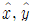
는 단위벡터이다.)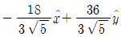
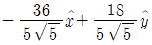
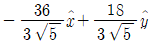
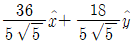
(정답률: 57%)
16. 내압이 2.0kV이고 정전용량이 각각 0.01μF, 0.02μF, 0.04μF인 3개의 커패시터를 직렬로 연결했을 때 전체 내압은 몇 V인가?
- 1750
- 2000
- 3500
- 4000
(정답률: 52%)
17. 그림과 같이 단면적 S(m2)가 균일한 환상철심에 권수 N1인 A 코일과 권수 N2인 B 코일이 있을 때, A코일의 자기 인덕턴스가 L1(H)이라면 두 코일의 상호 인덕턴스 M(H)는? (단, 누설자속은 0이다.)
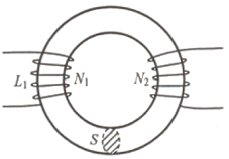
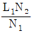
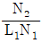
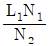
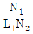
(정답률: 68%)
18. 간격 d(m), 면적 S(m2)의 평행판 전극 사이에 유전율이 ε인 유전체가 있다. 전극 간에 v(t)=Vmsinωt의 전압을 가했을 때, 유전체 속의 변위전류밀도(A/m2)는?
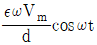
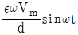
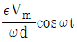
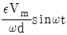
(정답률: 54%)
19. 속도 v의 전자가 평등자계 내에 수직으로 들어갈 때, 이 전자에 대한 설명으로 옳은 것은?
- 구면위에서 회전하고 구의 반지름은 자계의 세기에 비례한다.
- 원운동을 하고 원의 반지름은 자계의 세기에 비례한다.
- 원운동을 하고 원의 반지름은 자계의 세기에 반비례한다.
- 원운동을 하고 원의 반지름은 전자의 처음 속도의 제곱에 비례한다.
(정답률: 56%)
20. 쌍극자 모멘트가 M(C·m)인 전기쌍극자에 의한 임의의 점 P에서의 전계의 크기는 전기쌍극자의 중심에서 축방향과 점 P를 잇는 선분 사이의 각이 얼마일 때 최대가 되는가?
- 0
- π/2
- π/3
- π/4
(정답률: 62%)
2과목: 전력공학
21. 동작 시간에 따른 보호 계전기의 분류와 이에 대한 설명으로 틀린 것은?
- 순한시 계전기는 설정된 최소동작전류 이상의 전류가 흐르면 즉시 동작한다.
- 반한시 계전기는 동작시간이 전류값의 크기에 따라 변하는 것으로 전류값이 클수록 느리게 동작하고 반대로 전류값이 작아질수록 빠르게 동작하는 계전기이다.
- 정한시 계전기는 설정된 값 이상의 전류가 흘렀을 때 동작 전류의 크기와는 관계없이 항상 일정한 시간 후에 동작하는 계전기이다.
- 반한시·정한시 계전기는 어느 전류값까지는 반한시성이지만 그 이상이 되면 정한시로 동작하는 계전기이다.
(정답률: 62%)
22. 환상선로의 단락보호에 주로 사용하는 계전방식은?
- 비율차동계전방식
- 방향거리계전방식
- 과전류계전방식
- 선택접지계전방식
(정답률: 55%)
23. 옥내배선을 단상 2선식에서 단상 3선식으로 변경하였을 때, 전선 1선당 공급전력은 약 몇 배 증가하는가? (단, 선간전압(단상 3선식의 경우는 중성선과 타선간의 전압), 선로전류(중성선의 전류 제외) 및 역률은 같다.)
- 0.71
- 1.33
- 1.41
- 1.73
(정답률: 55%)
24. 3상용 차단기의 정격차단용량은 그 차단기의 정격전압과 정격차단전류와의 곱을 몇 배한 것인가?
- 1/√2
- 1/√3
- √2
- √3
(정답률: 70%)
25. 유효낙차 100m. 최대 유량 20m3/s의 수차가 있다. 낙차가 81m로 감소하면 유량(m3/s)은? (단, 수차에서 발생되는 손실 등은 무시하며 수차 효율은 일정하다.)
- 15
- 18
- 24
- 30
(정답률: 46%)
26. 단락용량 3000MVA인 모선의 전압이 154kV라면 등가 모선 임피던스(Ω)는 약 얼마인가?
- 5.81
- 6.21
- 7.91
- 8.71
(정답률: 55%)
27. 중성점 접지 방식 중 직접접지 송전방식에 대한 설명으로 틀린 것은?
- 1선 지락 사고 시 지락전류는 타접지방식에 비하여 최대로 된다.
- 1선 지락 사고 시 지락계전기의 동작이 확실하고 선택차단이 가능하다.
- 통신선에서의 유도장해는 비접지방식에 비하여 크다.
- 기기의 절연레벨을 상승시킬 수 있다.
(정답률: 48%)
28. 송전선에 직렬콘덴서를 설치하였을 때의 특징으로 틀린 것은?
- 선로 중에서 일어나는 전압강하를 감소시킨다.
- 송전전력의 증가를 꾀할 수 있다.
- 부하역률이 좋을수록 설치효과가 크다.
- 단락사고가 발생하는 경우 사고전류에 의하여 과전압이 발생한다.
(정답률: 54%)
29. 수압철관의 안지름이 4m인 곳에서의 유속이 4m/s이다. 안지름이 3.5m인 곳에서의 유속(m/s)은 약 얼마인가?
- 4.2
- 5.2
- 6.2
- 7.2
(정답률: 54%)
30. 경간이 200m인 가공 전선로가 있다. 사용전선의 길이는 경간보다 약 몇 m 더 길어야 하는가? (단, 전선의 1m당 하중은 2kg, 인장하중은 4000kg이고, 풍압하중은 무시하며, 전선의 안전율은 2이다.)
- 0.33
- 0.61
- 1.41
- 1.73
(정답률: 50%)
31. 송전선로에서 현수 애자련의 연면 섬락과 가장 관계가 먼 것은?
- 댐퍼
- 철탑 접지 저항
- 현수 애자련의 개수
- 현수 애자련의 소손
(정답률: 68%)
32. 전력계통의 중성점 다중 접지방식의 특징으로 옳은 것은?
- 통신선의 유도장해가 적다.
- 합성 접지 저항이 매우 높다.
- 건전상의 전위 상승이 매우 높다.
- 지락보호 계전기의 동작이 확실하다.
(정답률: 47%)
33. 전력계통의 전압조정설비에 대한 특징으로 틀린 것은?
- 병렬콘덴서는 진상능력만을 가지며 병렬리액터는 진상능력이 없다.
- 동기조상기는 조정의 단계가 불연속적이나 직렬콘덴서 및 병렬리액터는 연속적이다.
- 동기조상기는 무효전력의 공급과 흡수가 모두 가능하여 진상 및 지상용량을 갖는다.
- 병렬리액터는 경부하시에 계통 전압이 상승하는 것을 억제하기 위하여 초고압송전선 등에 설치된다.
(정답률: 58%)
34. 변압기 보호용 비율차동계전기를 사용하여 △-Y 결선의 변압기를 보호하려고 한다. 이때 변압기 1, 2차측에 설치하는 변류기의 결선 방식은? (단, 위상 보정기능이 없는 경우이다.)
- △ - △
- △ - Y
- Y - △
- Y - Y
(정답률: 65%)
35. 송전선로에 단도체 대신 복도체를 사용하는 경우에 나타나는 현상으로 틀린 것은?
- 전선의 작용인덕턴스를 감소시킨다.
- 선로의 작용정전용량을 증가시킨다.
- 전선 표면의 전위경도를 저감시킨다.
- 전선의 코로나 임계전압을 저감시킨다.
(정답률: 65%)
36. 어느 화력발전소에서 40000kWh를 발전하는데 발열량 860kcal/kg의 석탄이 60톤 사용된다. 이 발전소의 열효율(%)은 약 얼마인가?
- 56.7
- 66.7
- 76.7
- 86.7
(정답률: 54%)
37. 가공송전선의 코로나 임계전압에 영향을 미치는 여러 가지 인자에 대한 설명 중 틀린 것은?
- 전선표면이 매끈할수록 임계전압이 낮아진다.
- 날씨가 흐릴수록 임계전압은 낮아진다.
- 기압이 낮을수록, 온도가 높을수록 임계전압은 낮아진다.
- 전선의 반지름이 클수록 임계전압은 높아진다.
(정답률: 53%)
38. 송전선의 특성 임피던스의 특징으로 옳은 것은?
- 선로의 길이가 길어질수록 값이 커진다.
- 선로의 길이가 길어질수록 값이 작아진다.
- 선로의 길이에 따라 값이 변하지 않는다.
- 부하용량에 따라 값이 변한다.
(정답률: 52%)
39. 송전 선로의 보호 계전 방식이 아닌 것은?
- 전류 위상 비교 방식
- 전류 차동 보호 계전 방식
- 방향비교 방식
- 전압 균형 방식
(정답률: 46%)
40. 선로고장 발생 시 고장전류를 차단할 수 없어 리클로저와 같이 차단 기능이 있는 후비보호장치와 함께 설치되어야 하는 장치는?
- 배선용차단기
- 유입개폐기
- 컷아웃스위치
- 섹셔널라이저
(정답률: 64%)
3과목: 전기기기
41. 3상 변압기를 병렬 운전하는 조건으로 틀린 것은?
- 각 변압기의 극성이 같을 것
- 각 변압기의 %임피던스 강하가 같을 것
- 각 변압기의 1차와 2차 정격전압과 변압비가 같을 것
- 각 변압기의 1차와 2차 선간전압의 위상변위가 다를 것
(정답률: 61%)
42. 직류 직권전동기에서 분류 저항기를 직권권선에 병렬로 접속해 여자전류를 가감시켜 속도를 제어하는 방법은?
- 저항 제어
- 전압 제어
- 계자 제어
- 직·병렬 제어
(정답률: 52%)
43. 직류발전기의 특성곡선에서 각 축에 해당하는 항목으로 틀린 것은?
- 외부특성곡선: 부하전류와 단자전압
- 부하특성곡선: 계자전류와 단자전압
- 내부특성곡선 : 무부하전류와 단자전압
- 무부하특성곡선 : 계자전류와 유도기전력
(정답률: 53%)
44. 60Hz, 600rpm의 동기전동기에 직결된 기동용 유도전동기의 극수는?
- 6
- 8
- 10
- 12
(정답률: 41%)
45. 다이오드를 사용한 정류회로에서 다이오드를 여러 개 직렬로 연결하면 어떻게 되는가?
- 전력공급의 중대
- 출력전압의 맥동률을 감소
- 다이오드를 과전류로부터 보호
- 다이오드를 과전압으로부터 보호
(정답률: 54%)
46. 4극, 60Hz인 3상 유도전동기가 있다. 1725rpm으로 회전하고 있을 때, 2차 기전력의 주파수(Hz)는?
- 2.5
- 5
- 7.5
- 10
(정답률: 52%)
47. 직류 분권전동기의 전압이 일정할 때 부하토크가 2배로 증가하면 부하전류는 약 몇 배가 되는가?
- 1
- 2
- 3
- 4
(정답률: 52%)
48. 유도전동기의 슬립을 측정하려고 한다. 다음 중 슬립의 측정법이 아닌 것은?
- 수화기법
- 직류밀리볼트계법
- 스트로보스코프법
- 프로니브레이크법
(정답률: 45%)
49. 정격출력 10000kVA, 정격전압 6600V, 정격역률 0.8인 3상 비돌극 동기발전기가 있다. 여자를 정격상태로 유지할 때 이 발전기의 최대 출력은 약 몇 kW 인가? (단, 1상의 동기 리액턴스를 0.9pu라 하고 저항은 무시한다.)
- 17089
- 18889
- 21259
- 23619
(정답률: 37%)
50. 단상 반파정류회로에서 직류전압의 평균값 210 V를 얻는데 필요한 변압기 2차 전압의 실효값은 약 몇 V 인가? (단, 부하는 순 저항이고, 정류기의 전압강하 평균값은 15V로 한다.)
- 400
- 433
- 500
- 566
(정답률: 37%)
51. 변압기유에 요구되는 특성으로 틀린 것은?
- 점도가 클 것
- 응고점이 낮을 것
- 인화점이 높을 것
- 절연 내력이 클 것
(정답률: 64%)
52. 100kVA, 2300/115V, 철손 1kW, 전부하동손 1.25kW의 변압기가 있다. 이 변압기는 매일 무부하로 10시간, 1/2정격부하 역률 1에서 8시간, 전부하 역률 0.8(지상)에서 6시간 운전하고 있다면 전일효율은 약 몇 % 인가?
- 93.3
- 94.3
- 95.3
- 96.3
(정답률: 35%)
53. 3상 유도전동기에서 고조파 회전자계가 기본파 회전방향과 역방향인 고조파는?
- 제3고조파
- 제5고조파
- 제7고조파
- 제13고조파
(정답률: 57%)
54. 직류 분권전동기의 기동 시에 정격전압을 공급하면 전기자 전류가 많이 흐르다가 회전속도가 점점 증가함에 따라 전기자전류가 감소하는 원인은?
- 전기자반작용의 증가
- 전기자권선의 저항증가
- 브러시의 접촉저항증가
- 전동기의 역기전력상승
(정답률: 33%)
55. 변압기의 전압변동률에 대한 설명으로 틀린 것은?
- 일반적으로 부하변동에 대하여 2차 단자전압의 변동이 작을수록 좋다.
- 전부하시와 무부하시의 2차 단자전압이 서로 다른 정도를 표시하는 것이다.
- 인가전압이 일정한 상태에서 무부하 2차 단자전압에 반비례한다.
- 전압변동률은 전등의 광도, 수명, 전동기의 출력 등에 영향을 미친다.
(정답률: 52%)
56. 1상의 유도기전력이 6000 V인 동기발전기에서 1분간 회전수를 900rpm에서 1800rpm으로 하면 유도기전력은 약 몇 V 인가?
- 6000
- 12000
- 24000
- 36000
(정답률: 58%)
57. 변압기 내부고장 검출을 위해 사용하는 계전기가 아닌 것은?
- 과전압 계전기
- 비율차동 계전기
- 부흐홀츠 계전기
- 충격 압력 계전기
(정답률: 37%)
58. 권선형 유도전동기의 2차 여자법 중 2차 단자에서 나오는 전력을 동력으로 바꿔서 직류전동기에 가하는 방식은?
- 회생방식
- 크레머방식
- 플러깅방식
- 세르비우스방식
(정답률: 40%)
59. 동기조상기의 구조상 특징으로 틀린 것은?
- 고정자는 수차발전기와 같다.
- 안전 운전용 제동권선이 설치된다.
- 계자 코일이나 자극이 대단히 크다.
- 전동기 축은 동력을 전달하는 관계로 비교적 굵다.
(정답률: 48%)
60. 75W 이하의 소출력 단상 직권정류자 전동기의 용도로 적합하지 않은 것은?
- 믹서
- 소형공구
- 공작기계
- 치과의료용
(정답률: 65%)
4과목: 회로이론 및 제어공학
61. 그림의 제어시스템이 안정하기 위한 K의 범위는?
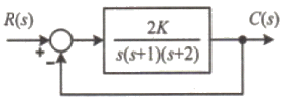
- 0＜K＜3
- 0＜K＜4
- 0＜K＜5
- 0＜K＜6
(정답률: 55%)
62. 블록선도의 전달함수가 C(s)/R(s)=10과 같이 되기 위한 조건은?
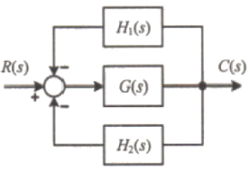
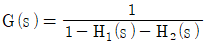
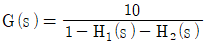
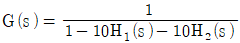
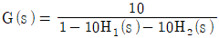
(정답률: 49%)
63. 주파수 전달함수가 G(jw)= 1/j100ω 인 제어시스템에서 ω=1.0rad/s 일 때의 이득(dB)과 위상각(°)은 각각 얼마인가?
- 20dB, 90°
- 40dB, 90°
- -20dB, -90°
- -40dB, -90°
(정답률: 48%)
64. 개루프 전달함수가 다음과 같은 제어시스템의 근궤적이 jω(허수)축과 교차할 때 K는 얼마인가?
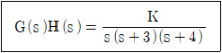
- 30
- 48
- 84
- 180
(정답률: 49%)
65. 그림과 같은 신호흐름선도에서 C(s)/R(s) 는?
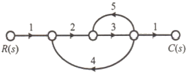
- -6/38
- 6/38
- -6/41
- 6/41
(정답률: 59%)
66. 단위계단 함수 u(t)를 z 변환하면?
- 1/(z-1)
- z/(z-1)
- 1/(Tz-1)
- Tz/(Tz-1)
(정답률: 59%)
67. 제어요소의 표준 형식인 적분요소에 대한 전달함수는? (단, K는 상수이다.)
- Ks
- K/s
- K
- K/(1+TS)
(정답률: 58%)
68. 그림의 논리회로와 등가인 논리식은?
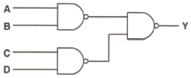
- Y=A·B·C·D
- Y=A·B+C·D
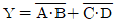
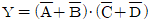
(정답률: 51%)
69. 다음과 같은 상태방정식으로 표현되는 제어시스템에 대한 특성방정식의 근(s1, s2)은?
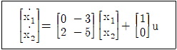
- 1, -3
- -1, -2
- -2, -3
- -1, -3
(정답률: 55%)
70. 블록선도의 제어시스템은 단위 램프 입력에 대한 정상상태 오차(정상편차)가 0.01이다. 이 제어시스템의 제어요소인 GC1(s)의 k는?
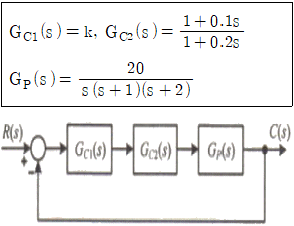
- 0.1
- 1
- 10
- 100
(정답률: 46%)
71. 평형 3상 부하에 선간전압의 크기가 200V인 평형 3상 전압을 인가했을 때 흐르는 선전류의 크기가 8.6A이고 무효전력이 1298var이었다. 이때 이 부하의 역률은 약 얼마인가?
- 0.6
- 0.7
- 0.8
- 0.9
(정답률: 43%)
72. 단위 길이당 인덕턴스 및 커패시턴스가 각각 L 및 C일 때 전송선로의 특성 임피던스는? (단, 전송선로는 무손실 선로이다.)
(정답률: 63%)
73. 각상의 전류가 ia(t)=90sinωt(A), ib(t)=90sin(ωt-90°)(A), ic(t)=90sin(ωt+90°)(A)일 때 영상분 전류(A)의 순시치는?
- 30cosωt
- 30sinωt
- 90sinωt
- 90cosωt
(정답률: 41%)
74. 내부 임피던스가 0.3+j2(Ω)인 발전기에 임피던스가 1.1+j3(Ω)인 선로를 연결하여 어떤 부하에 전력을 공급하고 있다. 이 부하의 임피던스가 몇 일 때 발전기로부터 부하로 전달되는 전력이 최대가 되는가?
- 1.4-j5
- 1.4+j5
- 1.4
- j5
(정답률: 53%)
75. 그림과 같은 파형의 라플라스 변환은?
(정답률: 48%)
76. 어떤 회로에서 t=0초에 스위치를 닫은 후 i=2t+3t2(A)의 전류가 흘렀다. 30초까지 스위치를 통과한 총 전기량(Ah)은?
- 4.25
- 6.75
- 7.75
- 8.25
(정답률: 51%)
77. 전압 v(t)를 RL 직렬회로에 인가했을 때 제3고조파 전류의 실효값(A)의 크기는? (단, R=8Ω, ωL=2Ω, v(t)=100√2sinωt+200√2sin3ωt+50√2sin5ωt(V) 이다.)
- 10
- 14
- 20
- 28
(정답률: 54%)
78. 회로에서 t=0 초에 전압 v1(t)=e-4tV를 인가하였을 때 v2(t)는 몇 V인가? (단, R=2Ω, L=1H이다.)
- e-2t-e-4t
- 2e-2t-2e-4t
- -2e-2t+2e-4t
- -2e-2t-2e-4t
(정답률: 29%)
79. 동일한 저항 R(Ω) 6개를 그림과 같이 결선하고 대칭 3상 전압 V(V)를 가하였을 때 전류 I(A)의 크기는?
- V/R
- V/2R
- V/4R
- V/5R
(정답률: 55%)
80. 어떤 선형 회로망의 4단자 정수가 A=8, B=j2, D=1.625+j일 때, 이 회로망의 4단자 정수 C는?
- 24-j14
- 8-j11.5
- 4-j6
- 3-j4
(정답률: 55%)
5과목: 전기설비기술기준 및 판단기준
81. 저압 옥상전선로의 시설기준으로 틀린 것은?
- 전개된 장소에 위험의 우려가 없도록 시설할 것
- 전선은 지름 2.6mm 이상의 경동선을 사용할 것
- 전선은 절연전선(옥외용 비닐절연전선은 제외)을 사용할 것
- 전선은 상시 부는 바람 등에 의하여 식물에 접촉하지 아니하도록 시설하여야 한다.
(정답률: 41%)
82. 이동형의 용접 전극을 사용하는 아크용접장치의 시설기준으로 틀린 것은?
- 용접변압기는 절연변압기일 것
- 용접변압기의 1차측 전로의 대지전압은 300V 이하일 것
- 용접변압기의 2차측 전로에는 용접변압기에 가까운 곳에 쉽게 개폐할 수 있는 개폐기를 시설할 것
- 용접변압기의 2차측 전로 중 용접변압기로부터 용접전극에 이르는 부분의 전로는 용접 시 흐르는 전류를 안전하게 통할 수 있는 것일 것
(정답률: 41%)
83. 사용전압이 15kV 초과 25kV 이하인 특고압 가공전선로가 상호 간 접근 또는 교차하는 경우 사용전선이 양쪽 모두 나전선이라면 이격거리는 몇 m 이상이어야 하는가? (단, 중성선 다중접지 방식의 것으로서 전로에 지락이 생겼을 때에 2초 이내에 자동적으로 이를 전로로부터 차단하는 장치가 되어 있다.)
- 1.0
- 1.2
- 1.5
- 1.75
(정답률: 44%)
84. 최대사용전압이 1차 22000V, 2차 6600V의 권선으로서 중성점 비접지식 전로에 접속하는 변압기의 특고압측 절연내력 시험전압은?
- 24000V
- 27500V
- 33000V
- 44000V
(정답률: 48%)
85. 가공전선로의 지지물로 볼 수 없는 것은?
- 철주
- 지선
- 철탑
- 철근 콘크리트주
(정답률: 56%)
86. 점멸기의 시설에서 센서등(타임스위치 포함)을 시설하여야 하는 곳은?
- 공장
- 상점
- 사무실
- 아파트 현관
(정답률: 63%)
87. 순시조건(t≤0.5초)에서 교류 전기철도 급전시스템에서의 레일 전위의 최대 허용접촉전압(실효값)으로 옳은 것은?
- 60V
- 65V
- 440V
- 670V
(정답률: 31%)
88. 전기저장장치의 이차전지에 자동으로 전로로부터 차단하는 장치를 시설하여야 하는 경우로 틀린 것은?
- 과저항이 발생한 경우
- 과전압이 발생한 경우
- 제어장치에 이상이 발생한 경우
- 이차전지 모듈의 내부 온도가 급격히 상승할 경우
(정답률: 53%)
89. 뱅크용량이 몇 kVA 이상인 조상기에는 그 내부에 고장이 생긴 경우에 자동적으로 이를 전로로부터 차단하는 보호장치를 하여야 하는가?
- 10000
- 15000
- 20000
- 25000
(정답률: 56%)
90. 전주외등의 시설 시 사용하는 공사방법으로 틀린 것은?
- 애자공사
- 케이블공사
- 금속관공사
- 합성수지관공사
(정답률: 46%)
91. 농사용 저압 가공전선로의 지지점 간 거리는 몇 m 이하이어야 하는가?
- 30
- 50
- 60
- 100
(정답률: 47%)
92. 특고압 가공전선로에서 발생하는 극저주파전계는 지표상 1m에서 몇 kV/m 이하이어야 하는가?
- 2.0
- 2.5
- 3.0
- 3.5
(정답률: 33%)
93. 단면적 55mm2인 경동연선을 사용하는 특고압가공전선로의 지지물로 장력에 견디는 형태의 B종 철근 콘크리트주를 사용하는 경우, 허용 최대 경간은 몇 m 인가?
- 150
- 250
- 300
- 500
(정답률: 25%)
94. 저압 옥측전선로에서 목조의 조영물에 시설할 수 있는 공사 방법은?
- 금속관공사
- 버스덕트공사
- 합성수지관공사
- 케이블공사(무기물절연(MI) 케이블을 사용하는 경우)
(정답률: 40%)
95. 시가지에 시설하는 154kV 가공전선로를 도로와 제1차 접근상태로 시설하는 경우, 전선과 도로와의 이격거리는 몇 m 이상이어야 하는가?
- 4.4
- 4.8
- 5.2
- 5.6
(정답률: 39%)
96. 귀선로에 대한 설명으로 틀린 것은?
- 나전선을 적용하여 가공식으로 가설을 원칙으로 한다.
- 사고 및 지락 시에도 충분한 허용전류용량을 갖도록 하여야 한다.
- 비절연보호도체, 매설접지도체, 레일 등으로 구성하여 단권변압기 중성점과 공통접지에 접속한다.
- 비절연보호도체의 위치는 통신유도장해 및 레일전위의 상승의 경감을 고려하여 결정하여야 한다.
(정답률: 40%)
97. 변전소에 울타리·담 등을 시설할 때, 사용전압이 345kV이면 울타리·담 등의 높이와 울타리·담 등으로부터 충전부분까지의 거리의 합계는 몇 m 이상으로 하여야 하는가?
- 8.16
- 8.28
- 8.40
- 9.72
(정답률: 49%)
98. 큰 고장전류가 구리 소재의 접지도체를 통하여 흐르지 않을 경우 접지도체의 최소단면적은 몇 mm2 이상이어야 하는가? (단, 접지도체에 피뢰시스템이 접속되지 않는 경우이다.)
- 0.75
- 2.5
- 6
- 16
(정답률: 35%)
99. 전력보안 가공통신선을 횡단보도교 위에 시설하는 경우 그 노면상 높이는 몇 m 이상인가? (단, 가공전선로의 지지물에 시설하는 통신선 또는 이에 직접 접속하는 가공통신선은 제외한다.)
- 3
- 4
- 5
- 6
(정답률: 37%)
100. 케이블트레이 공사에 사용할 수 없는 케이블은?
- 연피 케이블
- 난연성 케이블
- 캡타이어 케이블
- 알루미늄피 케이블
(정답률: 36%)